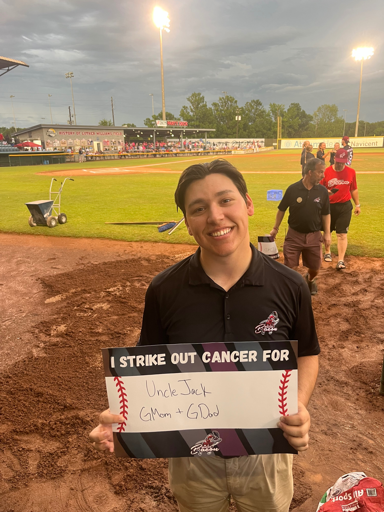

Assistant Athletic Director, Marketing and Promotions
University of Central Missouri | 2024–present
- Lead strategy and execution of marketing and promotions across UCM Athletics
- Launched infrastructure for email marketing and digital ads
- Achieved double-digit percentage attendance growth across revenue sports
This role challenged me to build from the ground up. It confirmed my belief in the power of targeted outreach, strong creative, and consistent execution.

Director, Marketing & Analytics
Macon Bacon | 2023–2024
- Oversaw marketing, content, game day production, and digital strategy
- Increased merchandise sales by 10% and new ticket sales by 12%
This was a hands-on creative lab that reinforced the value of aligning brand personality with fan behavior.

Copywriting and Social Media Manager
Elias Sports Bureau | 2022–2023
- Created social and written content reaching 100M+ impressions
- Oversaw redesigns using Canva, Adobe Photoshop, and Premiere Pro
This is where I built my marketing fundamentals—blending creativity with metrics to engage audiences at scale.
Founder
You Might Know Sports | 2019–present
- Built a blog to thousands of unique monthly readers
- Contracted for teams and organizations like Sports Info Solutions, Elias Sports Bureau, and more
This venture taught me how to manage clients, deliver remotely, and translate analytics into useful strategy.
Summary of Key Roles
| Position | Organization | Key Outcome |
|---|---|---|
| Assistant Athletic Director | UCM | +10% attendance growth |
| Marketing & Analytics Director | Macon Bacon | +12% new ticket sales |
| Social Media Manager | Elias Sports Bureau | 100M+ impressions |